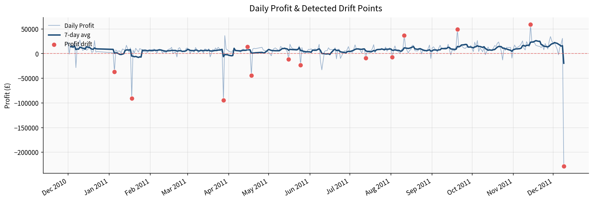
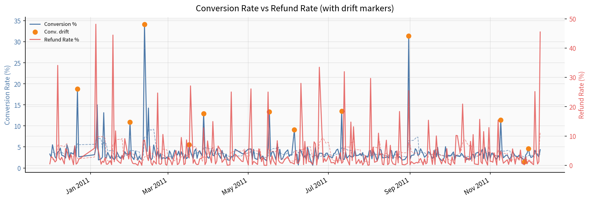
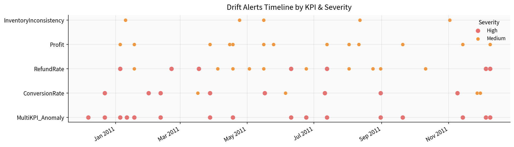
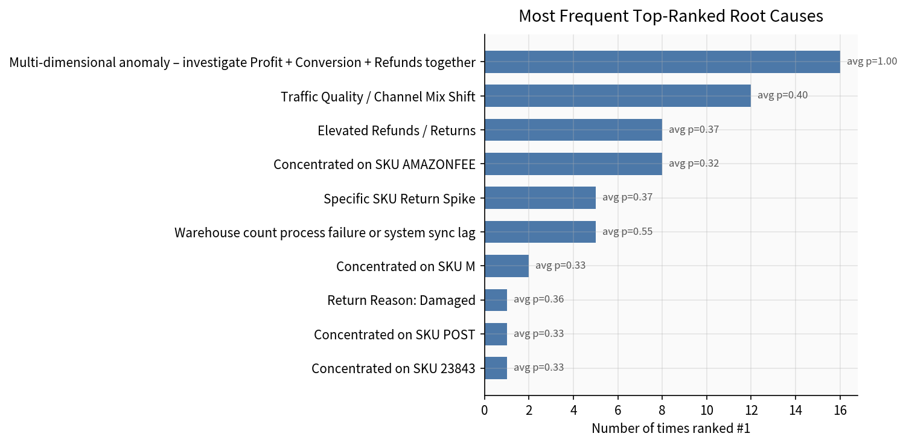
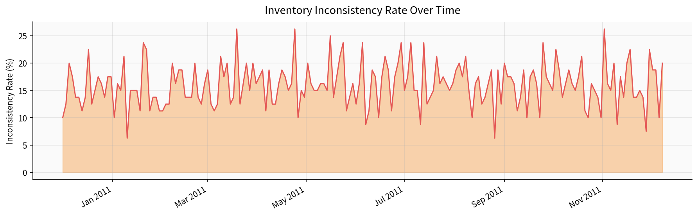
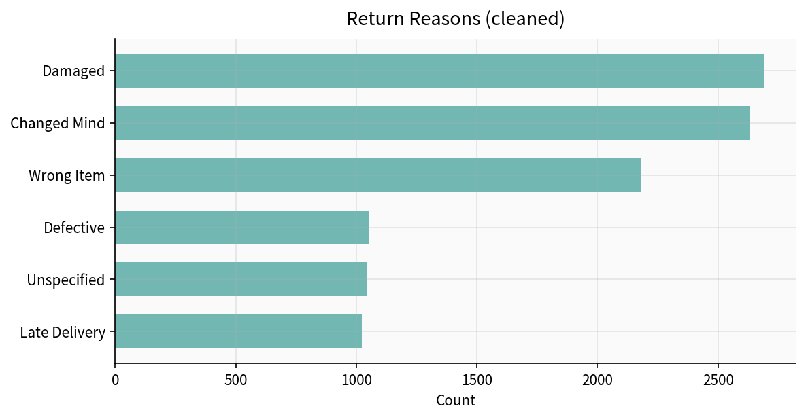
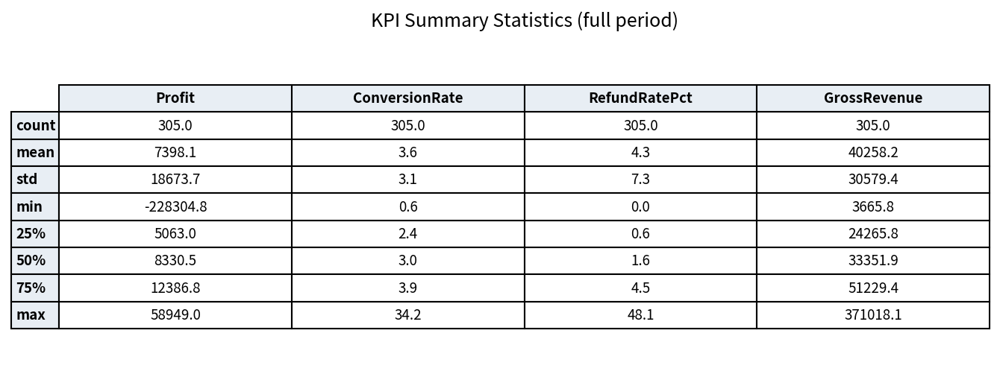

Results from the full pipeline run on UCI Online Retail + extended operational data
Daily net profit with 7-day moving average. Red markers show statistically significant profit drops (rolling z-score).

Several sharp negative days (e.g. Jan 2011) coincide with refund spikes — see root-cause rankings below.
Dual-axis view. Orange markers highlight conversion anomalies. Refund spikes often appear in the same windows as profit drops.

Every detected event plotted by KPI and severity. High-severity alerts (red) are the ones that would trigger stakeholder notifications.

When an alert fires, the system ranks possible causes. This chart shows how often each cause was ranked #1, with average probability.

Share of snapshots with negative or missing on-hand quantity.

After cleaning free-text reason fields.


| Date | KPI | Value | Z-Score | Direction | Severity |
|---|---|---|---|---|---|
| 2010-12-22 | ConversionRate | 18.80 | 3.37 | Spike | High |
| 2011-01-05 | Profit | -37,138 | -2.89 | Drop | Medium |
| 2011-01-05 | RefundRate | 48.13% | 3.42 | Spike | High |
| 2011-01-18 | Profit | -90,715 | -3.12 | Drop | Medium |
| 2011-01-18 | RefundRate | 44.43% | 2.23 | Spike | Medium |
| 2011-02-11 | ConversionRate | 34.17 | 3.35 | Spike | High |
| 2011-02-21 | RefundRate | 24.67% | 3.09 | Spike | High |
| 2011-03-14 | InventoryInconsistency | — | — | Spike | Medium |
| Rank | Cause | Probability | Evidence |
|---|---|---|---|
| 1 | Elevated Refunds / Returns | 0.37 | Refunds in last 7d much higher than prior window |
| 2 | Specific SKU Return Spike | 0.22 | Top return SKUs include AMAZONFEE and related codes |
| 3 | Order Volume Decline | 0.18 | Fewer unique invoices in the window |
| 4 | Supplier Price / Mix Change | 0.14 | Possible shift in supplier mix or unit cost |